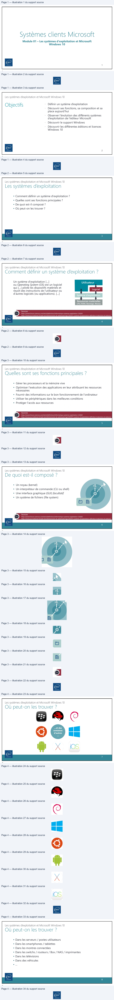
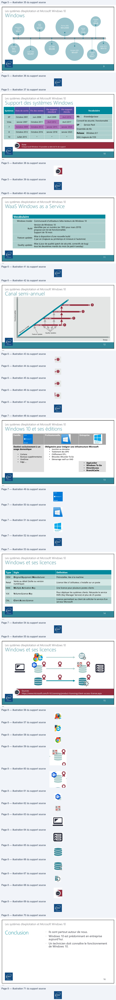

Transcription du document du Drive TSSR. La mise en forme est adaptée au Web ; les compléments IA du portail sont présentés séparément.
Module 01 – Les systèmes d'exploitation et Microsoft
Windows 10
1
1
Les systèmes d’exploitation et Microsoft Windows 10
Objectifs
• Définir un système d’exploitation
• Découvrir ses fonctions, sa composition et sa
place aujourd’hui
• Observer l’évolution des différents systèmes
d’exploitation de l’éditeur Microsoft
• Découvrir le support Windows
• Découvrir les différentes éditions et licences
Windows 10
2
2
Les systèmes d’exploitation et Microsoft Windows 10
• Comment définir un système d'exploitation ?
• Quelles sont ses fonctions principales ?
• De quoi est-il composé ?
• Où peut-on les trouver ?
3
3
Les systèmes d’exploitation et Microsoft Windows 10
Utilisateur
Logiciel
Un système d'exploitation […]
ou Operating System (OS) est un logiciel
qui […] pilote les dispositifs matériels et
reçoit des instructions de l'utilisateur ou
d'autres logiciels (ou applications). […]
Système d’exploitation
Ressources matérielles
CPU, RAM, Stockage, Réseau
Sources
https://www.futura-sciences.com/tech/definitions/informatique-systeme-exploitation-11820/
https://www.journaldunet.fr/web-tech/dictionnaire-du-webmastering/1203371-systeme-d-exploitation-definition-traduction-et-acteurs/
4
4
Les systèmes d’exploitation et Microsoft Windows 10
• Gérer les processeurs et la mémoire vive
• Optimiser l'exécution des applications en leur attribuant les ressources
nécessaires
• Fournir des informations sur le bon fonctionnement de l'ordinateur
• Utiliser les périphériques dans les meilleures conditions
• Protéger l'accès aux ressources
Sources
https://www.futura-sciences.com/tech/definitions/informatique-systeme-exploitation-11820/
https://www.journaldunet.fr/web-tech/dictionnaire-du-webmastering/1203371-systeme-d-exploitation-definition-traduction-et-acteurs/
5
5
Les systèmes d’exploitation et Microsoft Windows 10
• Un noyau (kernel)
• Un interpréteur de commande (CLI ou shell)
• Une interface graphique (GUI) facultatif
• Un système de fichiers (file system)
Sources
https://www.futura-sciences.com/tech/definitions/informatique-systeme-exploitation-11820/
https://www.journaldunet.fr/web-tech/dictionnaire-du-webmastering/1203371-systeme-d-exploitation-definition-traduction-et-acteurs/
6
6
>$ vv
© Ë
)
Les systèmes d’exploitation et Microsoft Windows 10
…et des
centaines
d'autres
…
7
7
Les systèmes d’exploitation et Microsoft Windows 10
• Dans les serveurs / postes utilisateurs
• Dans les smartphones / tablettes
• Dans les montres connectées
• Dans les switchs / routeurs / Box / NAS / imprimantes
• Dans les télévisions
• Dans des véhicules
• …
8
8
@
©
©
©
©:
M x
ios
End

Les systèmes d’exploitation et Microsoft Windows 10
Octobre
2012
Win8
Novembre
Février 2000
Win2000
Janvier
Août
1995
Win95
1985
Win1
2007
Vista
Juillet 2015
Août 1981
Win10
Juin 1998
Win98
Octobre 2001
MS-
DOS
Juillet 1993
Octobre
WinXP
WinNT
2009
Win7
9
9
Les systèmes d’exploitation et Microsoft Windows 10
Fin support
Systèmes
Date de sortie
Fin des ventes
Fin support
Vocabulaire
standard
étendu
Kb
Knowledge base
XP
Octobre 2001
Juin 2008
Avril 2009
Avril 2014
Correctif de sécurité / fonctionnalité
Vista
Janvier 2007
Octobre 2011
Avril 2012
Avril 2017
SP
Service Pack
7
Octobre 2009
Octobre 2013
Janvier 2015
Janvier 2020
Ensemble de Kb
8
Octobre 2012
Octobre 2016
Janvier 2018
Janvier 2023
Release
Windows 8.1
10
Juillet 2015
*
*
*
MAJ majeure de l'OS
Note
Chaque build Windows 10 possède sa date de fin de support
10
10
a
|
rr
RS
~-)
Les systèmes d’exploitation et Microsoft Windows 10
Vocabulaire
Windows Insider
Communauté d'utilisateurs bêta-testeurs de Windows 10
Build
Version de Windows 10
identifiée par un numéro (ex 1903 pour mars 2019)
propose son lot de fonctionnalités
Support de 18 mois
Feature updates
Mise à disposition d'une nouvelle build
2 par an (majeure au printemps et mineure à l'automne)
Quality updates
Mise à jour de qualité (patch de sécurité, correctifs de bug)
tous les deuxièmes mardis du mois (le patch tuesday)
11
11
Les systèmes d’exploitation et Microsoft Windows 10
BUILD 2009
BUILD 2009
BUILD 2004
BUILD 2004
BUILD 1909
BUILD 1909
Fonctionnalités
Fonctionnalités
BUILD 1903
BUILD 1903
Quality Updates
Quality Updates
Feature Update
Feature Update
Temps
Temps
12
12
Les systèmes d’exploitation et Microsoft Windows 10
WaaS Windows as a Service
Vocabulaire
Windows Insider Communauté d'utilisateurs bêta-testeurs de Windows 10
Version de Windows 10
identifiée par un numéro (ex 1903 pour mars 2019) Build propose son lot de fonctionnalités
Support de 18 mois
Mise à disposition d'une nouvelle build Feature updates 2 par an (majeure au printemps et mineure à l'automne)
Mise à jour de qualité (patch de sécurité, correctifs de bug) Quality updates tous les deuxièmes mardis du mois (le patch tuesday)
11
11
Les systèmes d’exploitation et Microsoft Windows 10
Canal semi-annuel
BUILDBUILD 20092009
BUILDBUILD 20042004
BUILDBUILD 19091909 FonctionnalitésFonctionnalités
BUILDBUILD 19031903
QualityQuality UpdatesUpdates
FeatureFeature UpdateUpdate
TempsTemps
12
12A
5
> 6
> O6
»O
ES
K R f F] 0
>
\
We
| Vocabulaire | |
| WindowsInsider | Communauté d'utilisateurs bêta-testeurs de Windows 10 |
| Build | VersiondeWindows10 identifiéeparunnuméro(ex1903pourmars2019) proposesonlotdefonctionnalités Supportde18mois |
| Featureupdates | Miseàdispositiond'unenouvellebuild 2paran(majeureauprintempsetmineureàl'automne) |
| Qualityupdates | Miseàjourdequalité(patchdesécurité correctifsdebug) , touslesdeuxièmesmardisdumois(lepatchtuesday) |
Les systèmes d’exploitation et Microsoft Windows 10
Famille
Professionnelle
Entreprise
Obligatoire pour intégrer une infrastructure Microsoft
Destiné exclusivement à un
usage domestique
•
Jonction au domaine
•
Traitement des GPO
•
Chiffrement EFS…
•
BitLocker, BitLocker To Go
•
Démarrage natif sur VHD
•
Cortana
•
Bureaux supplémentaires
•
OneDrive
•
Edge …
•
AppLocker
•
Windows To Go
•
DirectAccess
•
BranchCache
13
13
Les systèmes d’exploitation et Microsoft Windows 10
Type
Sigle
Définition
OEM
Original Equipment Manufacturer
Préinstallée, liée à la machine
Retail
Vente au détail (boîte ou version
numérique)
Licence liée à l'utilisateur, s'installe sur un poste
MAK
Multiple Activation Key
Une licence pour plusieurs postes clients
VLK
Volume Licence Key
Pour déployer les systèmes clients. Nécessite le service
KMS (Key Manager Service) et plus de 25 postes
CAL
Client Access Licence
Licence permettant au client de solliciter le service d'un
serveur Microsoft
14
14
Hil Windows 10
a
| Type | Sigle | Définition |
| OEM | OriginalEquipmentManufacturer | Préinstallée liéeàlamachine , |
| Retail | Venteaudétail(boîteouversion numérique) | Licenceliéeàl'utilisateur s'installesurunposte , |
| MAK | MultipleActivationKey | Unelicencepourplusieurspostesclients |
| VLK | VolumeLicenceKey | Pourdéployerlessystèmesclients Nécessiteleservice . KMS(KeyManagerService)etplusde25postes |
| CAL | ClientAccessLicence | Licencepermettantauclientdesolliciterleserviced'un serveurMicrosoft |
Les systèmes d’exploitation et Microsoft Windows 10
Sources
https://www.microsoft.com/fr-fr/Licensing/product-licensing/client-access-license.aspx
15
15
Les systèmes d’exploitation et Microsoft Windows 10
16
16
&
@
ner
te
oo Rg
= ——=
©)
End
